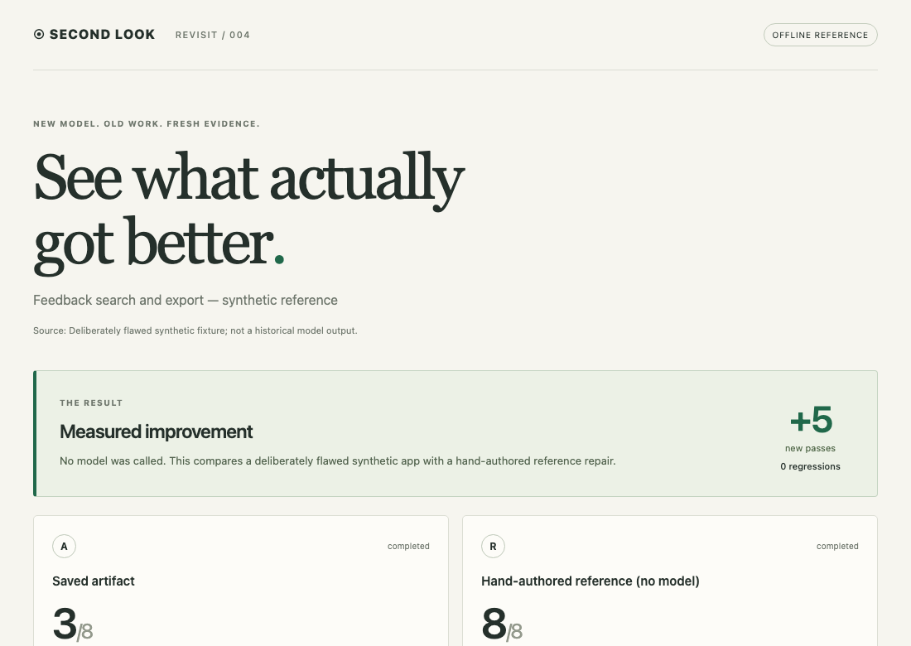

AN OPEN-SOURCE SECOND CHANCE
New model.
Old work.
Fresh evidence.
Your next model deserves the original problem.
Find what is worth revisiting. See what actually improves.
Local CLI · Python 3.11+ · macOS / Linux · MIT
“Export exactly the feedback
the team can see.”
One comparison.
Checks · regressions · screens · cost
Run the same frozen checks on every version.
Keep the original. Adopt changes after review.
Harvest the problem.Save purpose, evidence and unfinished work across projects.
Spend where it matters.Skip satisfied checks and identical attempts. Set a stop budget.
Keep the proof.Inspect functional changes, visual evidence and actual usage.
MEASURED, WITH LIMITS
Choose with evidence.
All three workflows passed the captured requirements.
The least expensive one depended on the task.
Job Radar · deadline truthfulness
D cost least on this task. All candidates passed the same 9 checks.
One sample per workflow, fixed B/C/D order, same reported model: claude-sonnet-5-5. Equal effective caps; different actual spend. API-equivalent estimates, not subscription invoices. Historical artifact authorship is unknown.
Inspect the exported trial metrics ↗Keep the inconvenient result. An early checkset mistakenly required the old DOM layout. We disclosed that trial, corrected the protocol, froze new checks and generated fresh candidates.
Read the protocol, failure and full costs ↗TOUCH THE EVIDENCE
A real browser run.
Zero model calls.
A deliberately broken feedback app. A hand-authored repair. The same eight checks, with screenshots you can inspect.
3/8→8/8
Open the interactive report ↗Synthetic reference demonstration. No model performance claim.

Inspect checks, screen states and usage ↗NEW IN 0.6 · NO NEW API ACCOUNT
Use the AI tool
you already have.
One frozen task. Up to four imported candidates.
The same behavior checks, screenshots and visible regressions.
Prepare.Keep the original purpose and checks. Export one request for patching or a fresh build.
Bring a response.Use a fresh conversation in your existing tool. Save its structured response.
Assess locally.See what improved and what broke. Missing costs stay unknown.
Preparation and assessment make zero model calls. External generation may cost money. The linked example uses two hand-authored responses, not two models. Imported model labels and usage are owner-reported and unverified.
YOUR FIRST SECOND LOOK
Start without a model account.
python3 -m venv .venv
source .venv/bin/activate
python -m pip install 'https://github.com/mandu5/secondlook/releases/download/v0.6.0/secondlook_revisit-0.6.0-py3-none-any.whl'
python -m playwright install chromium
secondlook doctor
secondlook demo --offline --output ./first-lookThen open first-look/report.html in your browser.
Bring your own work. Capture a static app and explicit acceptance criteria. Export a request to your existing AI tool, then assess its response locally. Claude Code live runs remain available.
Share a small, portable result. Export HTML/JSON metrics. Source, prompts and private paths stay out. Screenshots and intent are opt-in.
A FOCUSED OPEN-SOURCE TOOL
Useful today.
Honest about its reach.
Evaluation supports trusted static HTML/CSS/JS. Generate with Claude Code CLI or import responses from your existing AI tool. External generation is manual; its model identity and usage are unverified. General repository execution and automatic adoption are future work.
Our hypothesis: preserving intent and choosing what to revisit can make model upgrades useful. Current trials establish checked artifact changes. They do not establish SOTA, causal model uplift or a universal token savings rate.
Prior art & research ↗Does it earn
a second use?
We're testing v0.6 with real tasks before adding more features.
Tell us what you adopted, rejected, or found too hard to prepare.